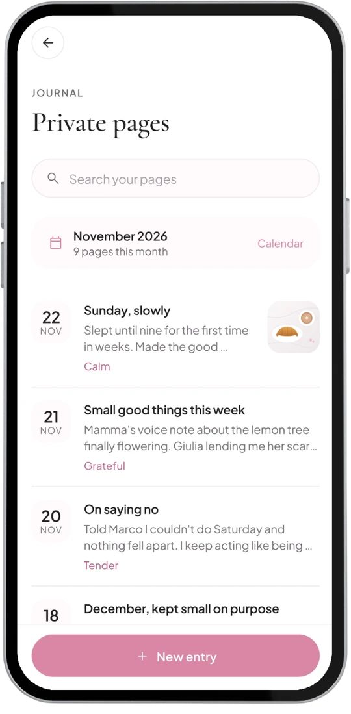
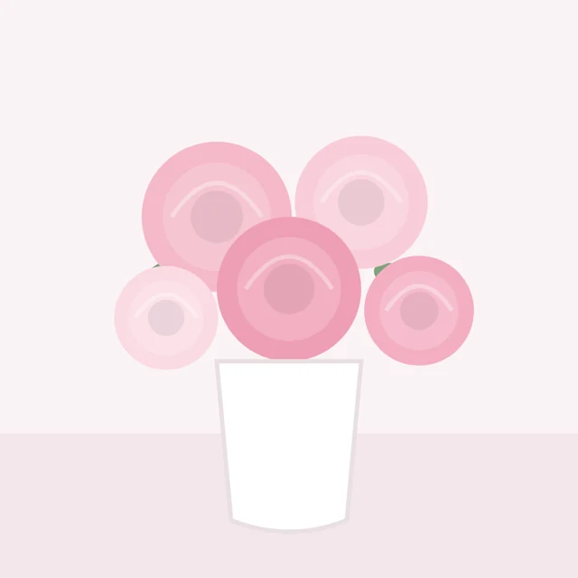

22NOV
Sunday, slowly
Slept until nine for the first time in weeks. Made the good coffee, opened the window even though it's cold, and let the flat be quiet for a while.
Calm
Private pages for reflections, gratitude and everyday thoughts, with photos and a mood for each day.


Sample entries showing the kinds of things people write.
Slept until nine for the first time in weeks. Made the good coffee, opened the window even though it's cold, and let the flat be quiet for a while.
CalmTold Marco I couldn't do Saturday and nothing fell apart. Writing it down so I start believing it.
TenderMamma's voice note about the lemon tree finally flowering. The barista who remembered my order. Sending the report a whole day early.
GratefulBought five for no reason at all. They are on the desk now and the whole room smells pink.
Calm
My hands shook for the first two slides and then they just stopped. Remember this the next time I am sure I can’t.
ProudSOVELLIQUE has no feeds, followers or public profiles. Your journal is never shared or published.
Add photos to an entry and choose how the day felt: calm, grateful, tender, proud or tired.
Search your pages and browse them by month with the calendar.
Start with one small question. Here are a few to try tonight.


Track your beauty shelf, build vision boards and keep gentle daily rituals, all in one app.